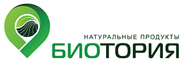

|  | «БиоТория»Крестьянско-фермерское хозяйство «БиоТория» началось с небольшого семейного бизнеса в городе Лиски Воронежской области в 2014 году. Его основатели всегда думали о том, как на практике применять эффективные стратегии органического земледелия и выращивать большой урожай экологически безопасной продукции. Результативность решили показать на собственном опыте. С каждым годом "Биотория" наращивает обороты, развивается и растет. В хозяйстве есть своя вермиферма, где разводят дождевого червя "Старатель". Он перерабатывает любую мягкую органику в биогумус, благодаря чему на ферме создают плодородный грунт. На ферме в 2017 году построен Солнечный Био-Вегетарий - комплекс из теплицы, административного блока и магазина. Теплица стала примером успешного круглогодичного органического земледелия. Здесь, в плодородном грунте собственного производства, растут экологически чистые овощи, зелень и ягоды. Выращивание натуральных, экологически чистых и качественных продуктов – залог здоровья нашей нации. |